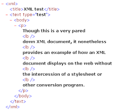

¿Qué es XML?
XML significa Lenguaje de Marcado Extensible. Es una forma de almacenar y organizar los datos que se puede leer tanto por las máquinas como por los humanos.
¿Cómo se ve el XML?
Un documento XML se compone de elementos, cada uno de los cuales está marcado por etiquetas. Aquí tienes un ejemplo muy sencillo:
La Guerra de los Mundos
H. G. Wells
1898
Así habló Zaratustra
Friedrich Nietzsche
1885
En este ejemplo,
¿Cómo se usa XML?
XML se utiliza para almacenar y transportar datos. Por ejemplo, si tienes una aplicación que necesita guardar los datos del usuario, podrías usar XML para hacerlo. Cuando necesites recuperar esos datos, simplemente lees el archivo XML.
XML también se utiliza para enviar datos a través de Internet. Por ejemplo, si tienes una aplicación que necesita obtener datos del tiempo de un servicio web, ese servicio podría enviarte los datos en formato XML.
